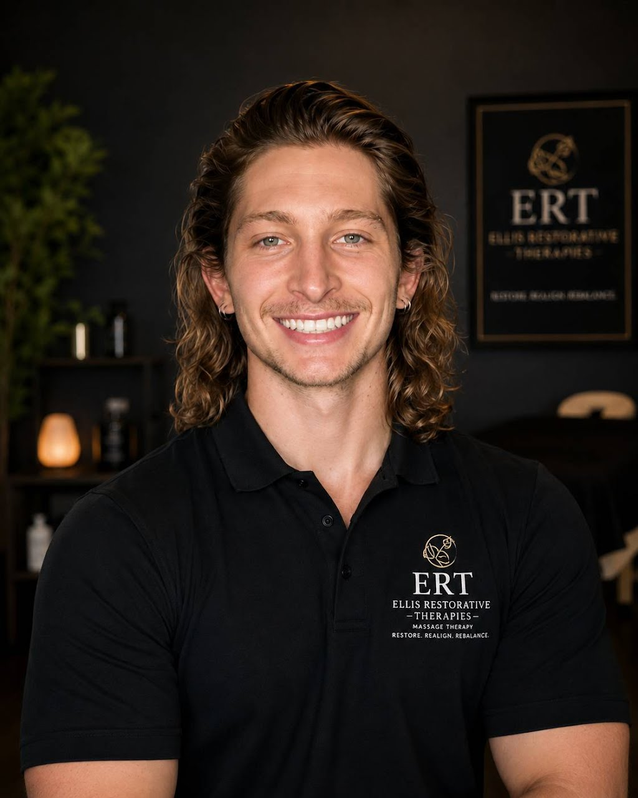

CAMTC #97101
Zachary Ellis
Thoughtful, integrative bodywork.
Zachary’s sessions blend clinical focus with an intuitive, restorative pace for clients working with tension, restriction, and recovery.
Book with Zachary ↗Ellis Restorative Therapies · Modesto, California
Restorative bodywork, delivered with focused attention and a clear path forward. Choose the therapist who feels right for your care, then book live availability online.
Start by choosing your therapist. Then view their live availability and select the session time that works for you.
Open booking ↗Meet your therapists
Both Zachary and Hunter offer the same session lengths and pricing. Choose the professional whose availability and approach fit your care.
Zachary Ellis
Zachary’s sessions blend clinical focus with an intuitive, restorative pace for clients working with tension, restriction, and recovery.
Book with Zachary ↗
CAMTC #103413Hunter Ellis
Hunter offers grounded therapeutic bodywork with an attentive, client-centered approach in the same private Ellis Restorative Therapies setting.
Book with Hunter ↗Weekend availability is not currently listed online. Please choose from the confirmed weekday availability above.
Sessions & pricing
Every session is shaped around your present needs. Both therapists offer the same straightforward session options.
Focused reset
A focused session for targeted areas of tension, discomfort, or maintenance care.
$100Deep restorative
More room for thorough, unhurried work and an integrated full-body approach.
$150Complete recovery
An extended session for clients who benefit from a slower, comprehensive pace.
$200The ERT approach
There is no one-size-fits-all sequence here. Sessions are responsive and informed by what you bring into the room, whether the goal is focused therapeutic work, space to decompress, or ongoing restorative care.
Visit or contact the practice →Share what feels relevant to your session and the kind of support you are seeking.
Your therapist adapts the work to your comfort, response, and intended outcome.
Make room for recovery with guidance that supports your next step.
Ready when you are